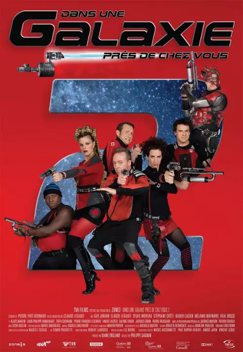
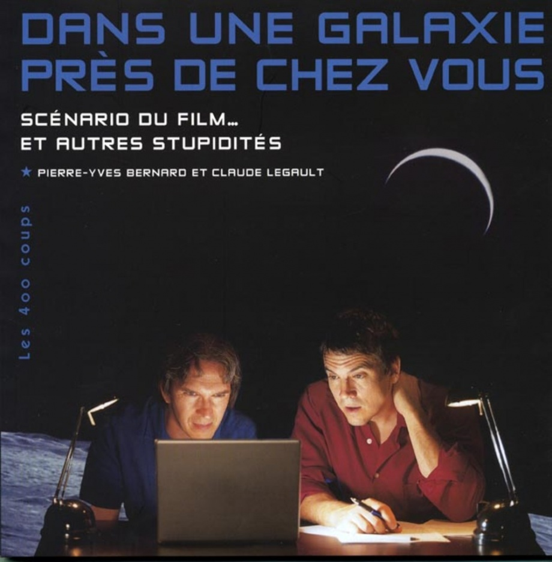
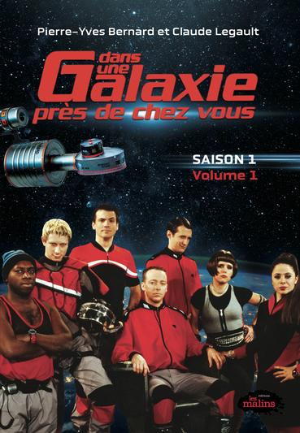
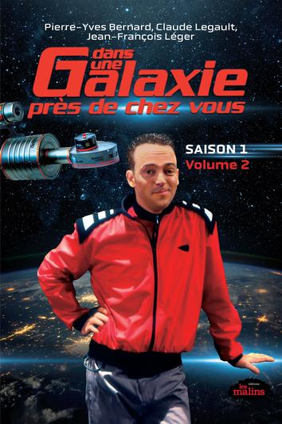
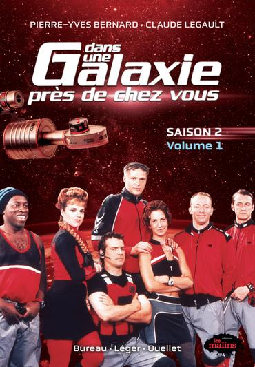

Vous trouverez ici la description de toutes les archives vidéo documentant les événements du voyage du
Romano Fafard.
(En d'autres mots, voici la liste des épisodes...)
La télésérie
| Saison 1 | |||
|---|---|---|---|
| N° épisode | Titre | Diffusion originale | Description |
| 1 | Attendez-nous pas pour souper! | 1999-01-25 | Après six mois de recherche infructueuse d'une planète habitable, l'équipage doit aller explorer plus loin dans l'espace. Ceci implique qu'ils ne seront plus en mesure de communiquer avec la Terre, à la grande crainte de Brad. |
| 2 | Bob, bu | 1999-01-25 | Bob se fait accidentellement déshydrater lorsqu'on a besoin de lui pour entrer dans l'orbite d'une planète. |
| 3 | Tout feu tout flamme | 1999-02-01 | Le capitaine et Valence n'arrivent plus à se cacher leur amour. |
| 4 | Le secret | 1999-02-15 | Brad ne compte pas laisser le capitaine et Valence entretenir leurs nouveaux liens. |
| 5 | Le huitième passager | 1999-02-22 | Brad affirme avoir vu une créature extra-terrestre dans le vaisseau, mais le reste de l'équipage ne le croit pas. |
| 6 | Le réveil de Flavien | 1999-03-01 | Flavien se fait sortir de régénérescence après que l'électricité ait été coupée, ce qui pourrait lui être fatal. |
| 7 | La liste | 1999-03-08 | Brad omet de dire à Falbo qu'un exercice de défense va être tenu. Falbo se retrouve ainsi convaincu que des extraterrestres ont envahi le vaisseau. |
| 8 | La course contre la montre | 1999-03-15 | Le capitaine Patenaude est atteint d'une crise d'appendicite. Mirabella, avec l'aide de Valence, tente de l'opérer. Durant ce temps, Brad prend le commandement du vaisseau. Ayant repéré une planète qui semble prometteuse, il exige à Bob et à Flavien de se dépêcher de l'atteindre avant que le capitaine ne puisse reprendre son poste, pour être celui ayant accompli la mission. |
| 9 | Le virus | 1999-03-22 | Brad donne un virus à Gervais et Bob enclenche l'auto-destruction du vaisseau pendant qu'il est somnambule. |
| 10 | Tou-tou-tou-touuut! | 1999-03-29 | L'équipage se met à entendre des sons inconnus provenant d'extra-terrestres. |
| 11 | Le procès | 1999-04-05 | Brad est en procès pour avoir faussé les rapports de sonde. |
| 12 | Le verglas | 1999-04-12 | Le Romano Fafard est emprisonné sous une immense couche de verglas. |
| 13 | Capitaine d'un jour | 1999-04-19 | Flavien, Brad et Bob doivent remporter un défi pour gagner la chance d'être capitaine d'un jour. |
La télésérie
| Saison 2 | |||
|---|---|---|---|
| N° épisode | Titre | Diffusion originale | Description |
| 1 | Hasta Luego | 1999-09-01 | L'équipage du Romano Fafard apprend que Mirabella n'est pas réellement médecin (seule Valence était au courant) et qu'elle est recherchée par la police. À la suite de cet aveu, Mirabella se sauve du Romano Fafard sans Bob, alors qu'ils avaient planifié de s'enfuir ensemble sur une planète. Falbo disparaît en tentant de la retrouver. |
| 2 | Le Minerai | 1999-09-08 | Bob est dévasté par le départ de Mirabella et ramène une roche extra-terrestre à bord du vaisseau comme substitut. |
| 3 | Lindâ | 1999-09-15 | Brad va en thérapie avec Valence et change radicalement de personnalité. |
| 4 | La belle et la bête | 1999-09-22 | L’équipage découvre une station orbitale russe à la dérive et en sauve les deux passagers survivants, soient Pétrolia et Serge. |
| 5 | Le transistor | 1999-09-29 | Serge a besoin d'un ancien transistor pour continuer à fonctionner. |
| 6 | Voyage au fond des rêves | 1999-10-06 | Bob fait un rêve prémonitoire dans lequel se produit une catastrophe. |
| 7 | Up tempo | 1999-10-13 | L'équipage se retrouve dans l'orbite d'une planète dont l'espace-temps est déréglé. |
| 8 | Le Mime | 1999-10-20 | Brad et Bob sont en guerre. Flavien essaie de les réconcilier sur la planète Granola-8, mais ils y trouvent un mime abandonné. Ils le ramènent à bord du Romano Fafard pour l'adopter, malgré les plaintes et les allergies de Brad. |
| 9 | Flavien et Juliette | 1999-10-27 | Lors de la visite d'une planète qui semble être parfaite, l'équipage rencontre une autre race voulant s'en emparer. |
| 10 | Le Roi | 1999-11-03 | Le capitaine Patenaude et Valence profitent du beau temps sur la planète Ouch pour y passer un séjour en amoureux, sous prétexte d'y étudier la psychologie des roches. Ils croient la planète déserte, dû à la température qui chute à -283 °C la nuit. Avant leur départ, le capitaine a ordonné à Brad et Bob de faire le ménage à bord du vaisseau. Le capitaine et Valence se font attaqués par une forme de vie extra-terrestre. Brad et Bob viennent à leur secours et les extra-terrestres prennent alors Bob pour un dieu, puisque celui-ci ressemble trait pour trait à une de leur statuette. |
| 11 | Les Esclaves | 1999-11-10 | Le Romano Fafard traverse une zone complètement vide. Bob vole, contre l'avis du capitaine, à Omega 4. Le vaisseau se fait alors intercepter par un homme qui dit être un agent de police de l'espace, mais qui est en réalité en ancien prisonnier qui souhaite revendre les membres de l'équipage à titre d'esclave. |
| 12 | Le Spectre | 1999-11-17 | Le spectre du capitaine Romano Fafard apparaît sur le vaisseau, et Flavien sera convaincu qu'il s'agit de son père. |
| 13 | Rintintinos | 1999-11-24 | Une invention de Pétrolia permet de se mettre dans la peau des autres. |
| 14 | Jim et Jules | 2000-01-05 | Le Romano Fafard trouve sur son chemin une clôture géante qui nécessiterait un mois à contourner. Le capitaine ordonne de foncer pour passer au travers, mais le vaisseau est alors pris au piège. La clôture est en fait une seule entité qui possède deux consciences, Jim et Jules, et qui souhaite désintégrer le Romano Fafard pour se nourrir des minéraux |
| 15 | Histoire de pêche | 2000-01-12 | Charles, Serge et Flavien sont partis pêcher sur une planète. Valence et Pétrolia sont supposées venir les rejoindre, mais toutes deux ignorent sur quelle planète les hommes sont, puisque Flavien a brouillé les données du téléfax avant de partir. Ils ne peuvent pas communiquer avec le vaisseau car l'émetteur est tombé à l'eau. |
| 16 | La Fin | 2000-01-19 | Le capitaine Jacques Bibeau, un prétendu Terrien, annonce au capitaine Patenaude que sa mission est terminée. |
| 17 | La Star des Étoiles | 2000-01-26 | Le Romano Fafard frappe une capsule cryogénique en provenance de la Terre. Le capitaine Patenaude ordonne de faire monter la capsule à bord et de l'ouvrir. Elvis Presley en sors et raconte qu'il a demandé à se faire cryogéniser parce qu'il en avait assez de sa vie de star. Flavien cherche alors à jouer de la musique avec son idole, Pétrolia deviens une groupie et Brad tente de devenir son gérant. |
| 18 | Virtuellement Vôtre | 2000-02-02 | Flavien s'embarque dans un jeu virtuel extrême lui causant des blessures réelles. |
| 19 | Le Test | 2000-02-09 | Les membres de l'équipage font passer un test à Brad. |
| 20 | Caïn et Abel | 2000-02-16 | Bob pense que Flavien veut lui voler Pétrolia. |
| 21 | La Source Mystérieuse | 2000-02-23 | Flavien et Pétrolia se retrouvent sur une planète où se trouve une source d'eau intrigante. |
| 22 | Le Rejet | 2000-03-01 | Brad envoie Bob en dehors du vaisseau. |
| 23 | La Fissure | 2000-03-08 | Lors d'une expérience ratée, Pétrolia ouvre une fissure spacio-temporelle qui ramène l'équipage très loin dans le passé. |
| 24 | La Misère des Riches | 2000-03-15 | Bob s'en remet à Brad pour changer sa personnalité dans le but de séduire Pétrolia. Il devient donc un être suffisant et manipulateur au grand désarroi de ses amis. |
| 25 | Zircon | 2000-03-22 | L'équipage deviendra amnésique après s'être mis en orbite autour d'une planète en diamant. |
| 26 | Le Fou | 2000-03-29 | Le Capitaine perd la tête juste avant de disparaître mystérieusement, Brad prendra ensuite les commandes et ordonnera l'attaque de la planète des Barzots. |
La télésérie
| Saison 3 | |||
|---|---|---|---|
| N° épisode | Titre | Diffusion originale | Description |
| 1 | Les mages | 2001-01-07 | Brad, qui est désormais Capitaine, ordonne le bombardement de la planète des Barzots. Pendant ce temps, Valence tentera de retrouver le vrai Capitaine avec l'aide des autres membres de l'équipage. |
| 2 | Spit-Barishny-Fire | 2001-01-14 | Afin de passer aux douanes, les membres de l'équipage doivent passer un test virtuel afin de les libérer de leurs émotions trop fortes. |
| 3 | La fièvre d'Ovégas | 2001-01-21 | L'équipage se retrouve sur une planète Casino où ils essaieront de ne pas jouer trop compulsivement. |
| 4 | Morver, C'est mourir un peu | 2001-01-28 | Afin de passer au travers d'une galaxie infestée d'un puissant virus, l'équipage doit se préparer à l'affronter. Pour garder leur système immunitaire «actif», ils s'assurent d'être malades avant d'entrer dans la galaxie. Bob, qui se croit incapable de tomber malade, ment sur son état de santé et feint la maladie. Ceci compliquera les choses… |
| 5 | Au-delà du Réal | 2001-02-04 | L'équipage appelle un agent d'immeuble pour les planètes, mais Flavien garde toujours un certain doute. |
| 6 | La guerre des sexes | 2001-02-11 | Valence tente de réconcilier les hommes et les femmes d'une planète où les deux sexes sont en guerre. |
| 7 | La Créature | 2001-02-18 | Flavien voit une terrifiante créature à bord du Romano Fafard qui terrorisera l'équipage. |
| 8 | Le Yable | 2001-02-25 | Pour la St-Jean-Baptiste, Flavien sors sa guitare et commence à jouer du Paul Piché. Ceci réveille le diable, qui déteste cette musique, et qui exige de ramener deux âmes en enfer, mais Valence réussi à le convaincre de léguer ses pouvoirs à un successeur. |
| 9 | Croûte que croûte | 2001-03-04 | Après que Pétrolia ait trafiqué le toaster de Bob, celui-ci projette une toast volante qui devient très dangereuse. |
| 10 | Le mal de Terre | 2001-03-11 | Bob est atteint d'un étrange mal de vivre. Le diagnostic de Serge 2 est formel, mais il reçoit un coup au visage de la part de Brad, ce qui provoque et court-circuit et l'empêche de révéler ce dont est atteint Bob. Pétrolia tente de réparer l'androïde alors que Flavien et le capitaine essaient tant bien que mal de motiver le pilote. |
| 11 | Deux frères | 2001-03-18 | Selon une certaine lettre retrouvée, Brad et le Capitaine seraient des frères. |
| 12 | Le retour du Jet d'aïl | 2001-03-25 | Bob a rêvé pour la 3e fois qu'un Jedi arrivait dans le vaisseau pour rencontrer un aspirant Jedi. L'équipage cherche alors à découvrir qui est l'aspirant Jedi et se prépare à accueillir le Jedi. |
| 13 | La Genèse | 2001-04-01 | À l'occasion de Noël, le capitaine offre un collier de perles à Valence. À la suite des interrogations de Brad, il avoue vivre une idylle avec la psychologue et démissionne de son poste. Il raconte alors ses souvenirs du moment où il a rencontré chacun des membres de l'équipage, lors de l'épreuve de sélection. |
La télésérie
| Saison 4 | |||
|---|---|---|---|
| N° épisode | Titre | Diffusion originale | Description |
| 1 | Médecine d'ourse | 2001-09-02 | Serge est détruit à la suite d'un accident dont Brad est à l'origine. Les membres d'équipage font face à deux problèmes : ils doivent trouver un nouveau médecin pour remplacer Serge et réparer le système d'allumage, qui a été détruit lors de l'accident. |
| 2 | Maman Brad | 2001-09-09 | Une entité extraterrestre choisit Brad comme mère. Celui-ci devient donc enceint. |
| 3 | Œdipe Bouchard | 2001-09-16 | Un homme étrange débarque sur le vaisseau et propose une planète habitable en échange de Valence. Cependant, Flavien éprouve une forte haine envers cet homme. |
| 4 | No man's land | 2001-09-23 | En l'honneur de l'anniversaire de Pétrolia, Bob et Flavien ont réparé Serge 2, devenu Serge 3, et lui ont octroyé une nouvelle fonction permettant de choisir parmi 1001 de ses personnalités grâce à une petite zapette. Bob, Flavien et Brad se servent de cette nouvelle fonction pour un usage personnel, contre l'avis de Pétrolia. Durant ce temps, l'équipage se prépare à traverser une zone qui est interdite aux terriens. |
| 5 | Cuits cuits cuits | 2001-09-30 | Le capitaine tient à ce que le vaisseau passe entre deux étoiles, même si le mercure doit grimper dangereusement. |
| 6 | Hamlet (au fromage) | 2001-10-07 | Brad a empoisonné le Capitaine et celui-ci meurt subitement. |
| 7 | Amnésie international | 2001-10-14 | Le Capitaine, Bob et Flavien perdent graduellement la mémoire, et Brad devra sauver la situation. |
| 8 | As stéroïde | 2001-10-21 | L'équipage se prépare à frôler la météorite Sonia-27, de la taille de la Saskatchewan. Pour ce faire, Bob, Brad, Flavien et Pétrolia utilisent une colle inventée par cette dernière pour fixer les tuiles du vaisseau et éviter qu'elles ne tombent, mais Bob et Brad se collent accidentellement la main ensemble. Flavien calcule que la trajectoire de la météorite la mènera à frapper la Terre dans cinq mois. Le capitaine Patenaude cherche une solution pour éviter cette catastrophe. |
| 9 | La belle ordure | 2001-10-28 | Lors de l'exploration du dépotoir de l'univers, Brad ramène une jeune femme bien spéciale avec lui. |
| 10 | Le destin | 2001-11-04 | Croyant faire affaire avec une agence d'escorte, Brad commande une voyante à bord du vaisseau. |
| 11 | Casanobrad | 2001-11-11 | Après une erreur avec une de ses inventions, Brad se fait cloner et son double devient l'idole des femmes. |
| 12 | La fin de la faim | 2001-11-18 | L'équipage meurt de faim. Il ne reste plus qu'une seule pomme à manger dans le vaisseau. L'équipage attend le rapport de la sonde pour savoir s'il y a une planète contenant de la nourriture près d'eux. En attendant, le capitaine vante les qualités de chacun des membres de l'équipage. S'ensuivent des extraits des moments forts de la série. |
| 13 | Bonsoir, ils sont partis | 2001-11-25 | L’équipage trouve une planète parfaite, mais la mission se terminera-t-elle en beauté? |
Les films
| Films | |||
|---|---|---|---|
| Affiche | Titre | Sortie | Description |
 |
Dans une galaxie près de chez vous - Le film | 2004-04-09 | En 2039, l'équipage du vaisseau Romano-Fafard, dirigé par le capitaine Patenaude, est toujours à la recherche d'une planète viable pour redonner vie à l'humanité et accueillir les six milliards de tatas de la Terre. Ils en ont peut-être enfin trouvé une, mais ce ne sera pas sans problème |
 |
Dans une galaxie près de chez vous 2 | 2008-04-18 | Après que leur sonde se soit écrasée sur une planète nouvellement découverte, l'équipage du Romano Fafard est présenté à une race extraterrestre qui pourrait savoir où trouver la planète idéale pour déplacer la race humaine mourante. |
| Dans une galaxie près de chez vous 3 (titre présumé) | TBD | Le 3e film a été annoncé officiellement en 2019, Téléfilm Canada a annoncé le financement de la production en avril 2026. Aucune date de sortie annoncée | |
Les livres
| Livres | |||
|---|---|---|---|
| Couverture | Titre | Sortie | Description |
 |
Dans une galaxie près de chez vous : scénario du film-- et autres stupidités | 2004-11-15 | Scénario du 1er film Dans une Galaxie près de chez vous, accompagné de commentaires des auteurs Pierre-Yves Bernards et Claude Legault |
 |
Dans une galaxie près de chez vous T.1.1 - Saison 1, Volume 1 | 2024-09-24 | Scénarios des épisodes 1 à 7 de la première saison de le série Dans une galaxie près de chez vous, accompagné de photos et commentaires des auteurs Pierre-Yves Bernards et Claude Legault |
 |
Dans une galaxie près de chez vous T.1.2 - Saison 1, Volume 2 | 2024-09-24 | Scénarios des épisodes 8 à 13 de la première saison de le série Dans une galaxie près de chez vous, accompagné de photos et commentaires des auteurs Pierre-Yves Bernards et Claude Legault |
 |
Dans une galaxie près de chez vous T.2.1 - Saison 2, Volume 1 | 2025-11-18 | Scénarios des épisodes 1 à 6 de la deuxième saison de le série Dans une galaxie près de chez vous, accompagné de photos et commentaires des auteurs Pierre-Yves Bernards et Claude Legault |